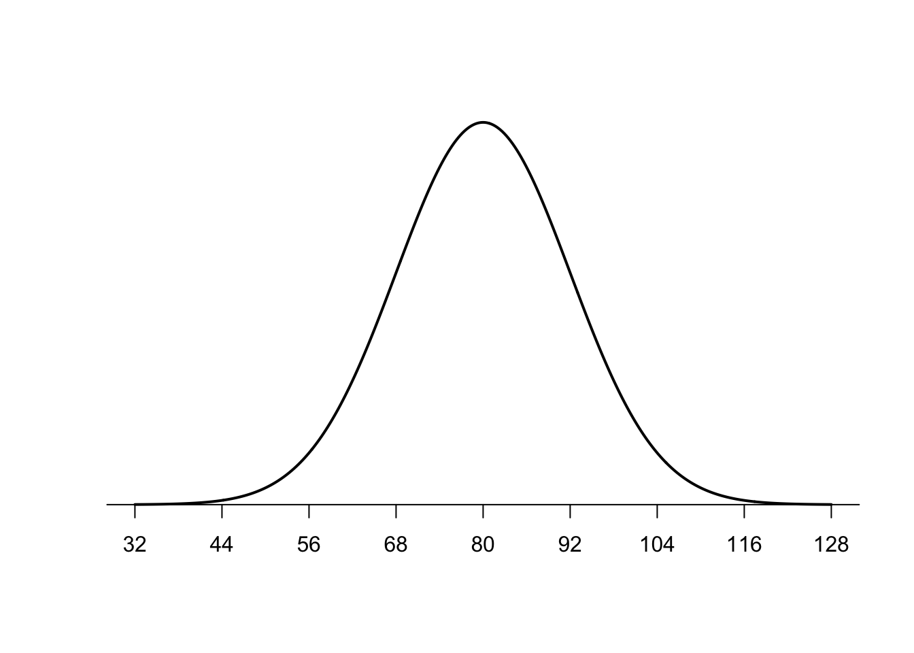
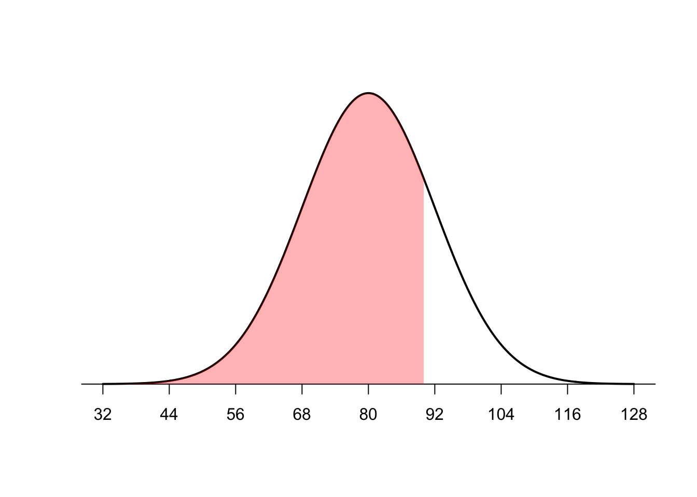
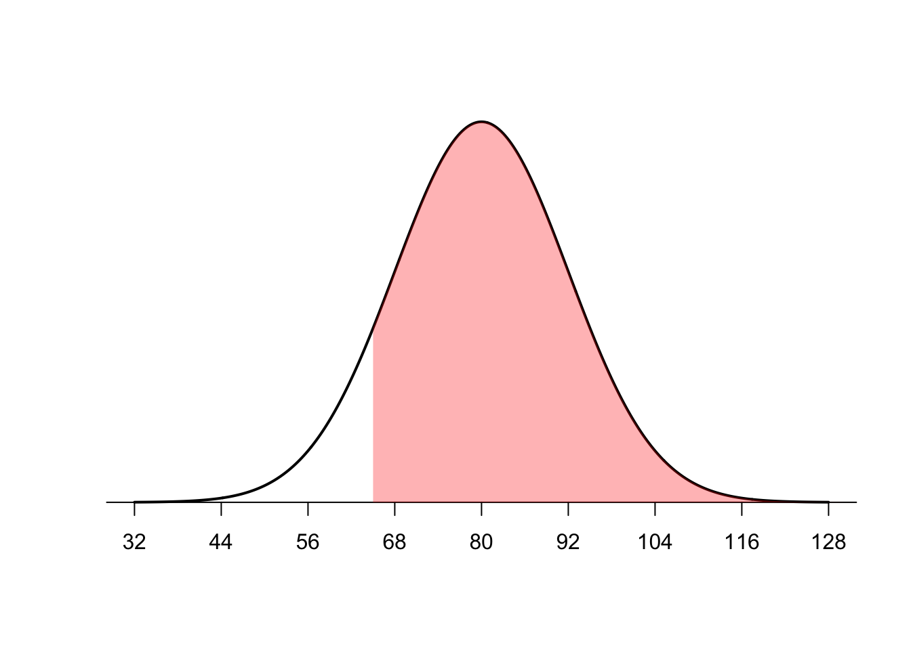
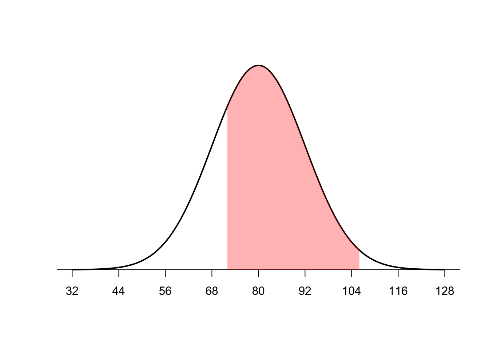

Normal Curve and Z scores
James Van Slyke
Properties of the Normal Curve
The normal curve is a special kind of histogram that has a particular shape and certain properties. Remember that a histogram usually represents a continuous variable, so it is most often numeric. There’s other important attributes of the normal curve that are essential to hypothesis testing and statistical analysis.

Normal Curve - https://www.simplypsychology.org/normal-distribution.html
As described in the image above, there are several important properties of a normal curve.
The distribution of scores is symmetrical about the mean, which indicates that if you were to fold the distribution in half both sides or tails of the distribution would match.
The mean, median and mode are all equal
The distribution will have two inflection points indicating one standard deviation above and below the mean.
Remember that in a normal curve most of the data is close to the mean or scores with the highest frequency are closest to the mean. As you move to the tails of the normal distribution there is a lower frequency of scores, less of the variable is contained in the tails of the distribution. Another way to think of this is that more extreme scores (scores that are either much smaller or much larger than the mean) are contained in the tails of the distribution and are less probable.
The proportion or percentage of a particular variable in a normal curve is dispersed differently throughout the curve

Distribution of scores in a normal curve
Image credit - https://towardsdatascience.com/understanding-the-68-95-99-7-rule-for-a-normal-distribution-b7b7cbf760c2
- 34.13% of the data are between the mean and one standard deviation above it or below it.
- 13.59% of the data is between one and two standard deviations
- 2.15% of the data is between two and three standard deviations
So when a data point or score is further on either of the tails of the distribution, the data point is less probable or more extreme.
Z Scores
One of the ways we are able to understand the probability or distribution of scores in a normal curve is through the use of z scores. A z score is score that designates how many standard deviations a particular score is above or below the mean.
The formula is the score minus the mean divided by the standard deviation. Here is the formula: \[ z = \frac{X - \bar X}{s} \] z scores can be positive or negative depending on whether the score in question is above or below the mean. Thus, the higher the magnitude of the score (meaning independent of whether it’s positive or negative) the further the score is away from the mean.
 Image from https://www.scribbr.com/statistics/standard-normal-distribution/
Image from https://www.scribbr.com/statistics/standard-normal-distribution/
Each z score also has a particular percentage associated with it. So for example we can see what percentage is associated with a z score of 1
pnorm(1)## [1] 0.8413447This tells us that a z score of 1 is at the 84th percentile or that 84% of the scores in a normal curve are below a z score of 1.
Remember also that half of the scores are above and below the mean or 50% of the scores are above and below the mean.
If we take this score (0.8413447) minus 50% or .50, we’ll get proportion or percentage between the mean and 1 standard deviation above it.
pnorm(1) - .50## [1] 0.3413447Notice that this is the same percentage we saw earlier between the mean and one standard deviation above it, 34.13%.
Example Problem
Imagine that a nationwide mathematics aptitude test is normally distributed with a mean of 80 and a standard deviation of 12. Here’s a look at the graph of the distribution of mathematics aptitude test scores.

Now imagine our score on the aptitude test was 90 and we were curious what percentage of scores were below our score. So we were interested in the area below a score of 90 as shown in the shaded area below.

To perform this calculation, we can find the z score associated with
the score of 90 and then use pnorm to find what percentage
is associated with that z score.
Find the z score
(90-84)/12## [1] 0.5Then find the percentage associated with that z score
pnorm(0.5)## [1] 0.6914625So a score of 90 is at the 69th percentile or approximately 69% of the scores on the aptitude test are less than a score of 90.
Or we can go the opposite direction. Let’s say we want to know the percentage of scores above a score of 65. Or the area described below.

First, we need to find the z score associated with a score of 65.
(65-80)/12## [1] -1.25Then we take the pnorm of that number but subtract it from 1.00 because we are looking for the scores above it.
1.00 - pnorm(-1.25)## [1] 0.8943502So approximately 89% of the scores are above a score of 65.
So if you want to know the percentage of scores above a particular score you subtract the pnorm z score from 1.00, but if you want to know the percentage below a certain number or the percentile rank, you simply do the pnorm of the z score.
You can also find the percentage of scores between certain scores. Just find the z scores associated with each score and subtract them.
For example, what percentage of scores are between a score of 72 and 106?

Find the z score associated with each and then use pnorm to find the percentage associated with each z score. Make sure to subtract the smaller number from the larger.
z1 <- (72-80)/12
z2 <- (106-80)/12
pnorm(z2) - pnorm(z1)## [1] 0.7323773